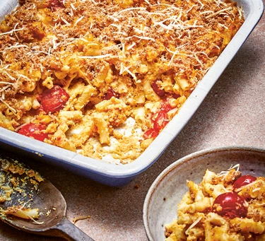

Pasta Bake

Dive into this comforting vegan pasta bake with sweet potato and cherry tomatoes. Creamy, nutty cashews take centre stage, along with plant-based milk, dairy-free cheese and plenty of veg
Ingredients
- 500g macaroni
- vegan parmesan, grated, to serve
- 100g cashew nuts
- 1 large carrot, cut into chunks
- 1 medium floury potato, cut into chunks
- 1 onion, roughly chopped
- 1 celery stick roughly chopped
- 150g sweet potato or butternut squash, cut into chunks
- 3 garlic cloves, roughly chopped
- 1 tsp dried oregano
- 1 tsp mustard powder
- 2 tbsp nutritional yeast (optional)
- 200ml plant-based milk
- 150g cherry tomatoes
- 50g wholemeal breadcrumbs
- a few basil leaves, finely chopped
- 50g vegan cheese, grated
To The top
Home